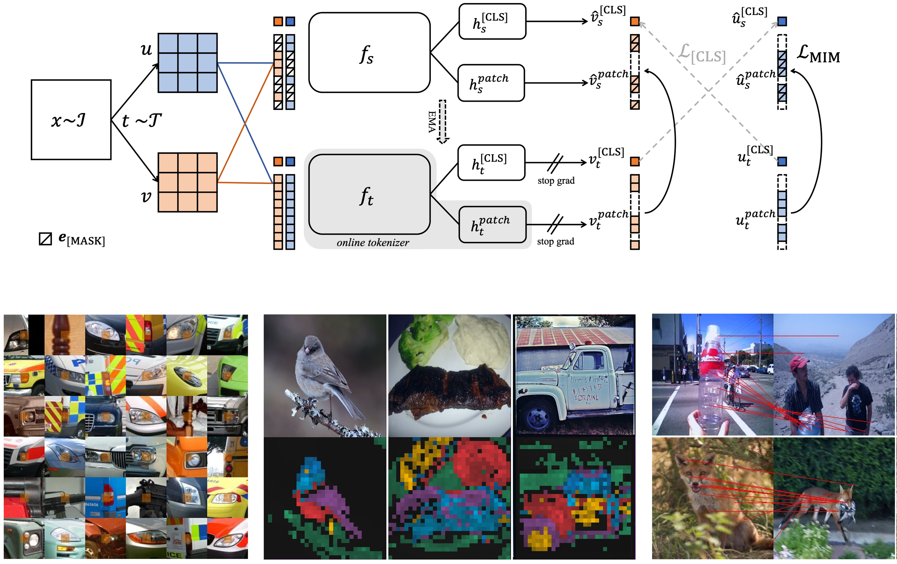
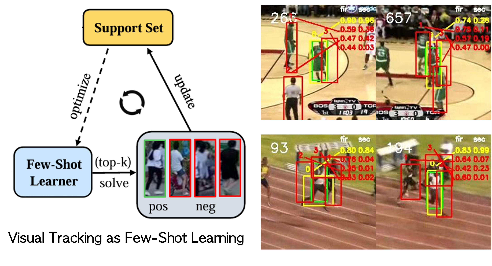
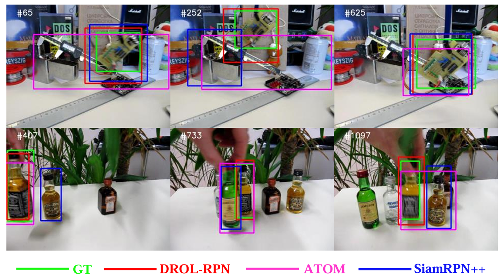

Jensen (Jinghao) Zhou


Jensen (Jinghao) Zhou
I am a third-year Ph.D. student at University of Oxford supervised by Prof. Christian Rupprecht and Prof. Philip Torr.
I am a part of both the Visual Geometry Group as well as Torr Vision Group.
I like building multi-modal generative models and (self-)supervised generalist models, with a string of fun research experiences at
Meta (2025),
Stability AI (2024),
Google (2023),
Microsoft (2022),
ByteDance (2021),
JHU (2021),
and SenseTime (2020).
I find joy in telling stories—of my research, crafts, reflections, and becoming.
If you're curious to read a few, begin here.
News
I am actively looking for startup opportunities on spatial AI.
- Mar. 2025 - Stable Virtual Camera (Seva) is out everywhere now!
- Jun. 2024 - Scene-Cond-3D gets accepted by ECCV 2024.
- Jan. 2024 - dBOT gets accepted by ICLR 2024.
- Feb. 2023 - xCLIP gets accepted by CVPR 2023.
- Jan. 2022 - iBOT gets accepted by ICLR 2022.
Publications
Full Publications: Google Scholar
-
Stable Virtual Camera: Generative View Synthesis with Diffusion Models

Jensen (Jinghao) Zhou*, Hang Gao*, Vikram Voleti, Aaryaman Vasishta, Chun-Han Yao, Mark
homepage / arXiv / blog / code / model card / demo / video / thread / press
Boss, Philip Torr, Christian Rupprecht, Varun Jampani
Tech report, 2025
Hottest AI models released in 2025
-
Incrementally Adapting Generative Vision-Language Models with Task Codebook

Jinghao Zhou, Ahmet Iscen, Mathilde Caron, Christian Rupprecht, Philip Torr, Cordelia Schmi
paper
t
Tech report, 2024

-
Non-Contrastive Learning Meets Language-Image Pre-Training

Jinghao Zhou, Li Dong, Zhe Gan, Lijuan Wang, Furu Wei
arXiv
CVPR, 2023
-
iBOT: Image BERT Pre-Training with Online Tokenizer

Jinghao Zhou, Chen Wei, Huiyu Wang, Wei Shen, Cihang Xie, Alan Yuille, Tao Kong
arXiv / camera-ready / code / thread / press
ICLR, 2022
Most Influential ICLR Papers in Google Scholar Metrics 2023Improved and scaled up to the foundation model DINOv2 by Meta AI
-
Real-Time Visual Object Tracking via Few-Shot Learning

Jinghao Zhou, Bo Li, Peng Wang, Peixia Li, Weihao Gan, Wei Wu, Junjie Yan, Wanli Ouyang
paper
Tech report, 2021
-
Discriminative and Robust Online Learning for Siamese Visual Tracking

Jinghao Zhou, Peng Wang, Haoyang Sun
arXiv / camera-ready / code
AAAI, 2020
Interests
Spatial AI, Multi-Modal Generative Models, General-Purpose Models, Self-Supervised Learning.